Великодідушицький ліцей
–
Навчалася у школі рідного села у Львівській області. Шкільні роки дали мені хорошу базу та допомогли визначитися з майбутнім напрямом навчання.
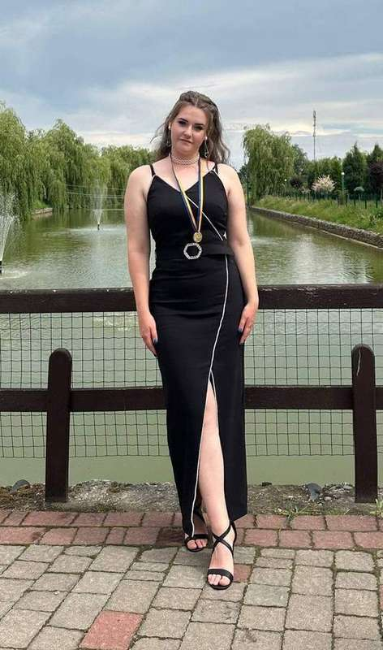
Студентське портфоліо
Я студентка факультету прикладної математики та інформатики Львівського національного університету імені Івана Франка. Навчаюся на спеціальності «Прикладна математика» та зараз знайомлюся з веброзробкою.
Написати мені
–
Навчалася у школі рідного села у Львівській області. Шкільні роки дали мені хорошу базу та допомогли визначитися з майбутнім напрямом навчання.

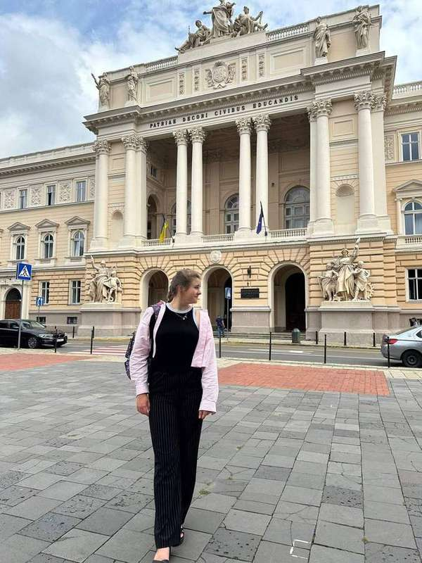
Факультет прикладної математики та інформатики
Спеціальність — «Прикладна математика»
3 курс
Під час навчання вивчаю математичні та інформаційні дисципліни. Серед напрямів, з якими вже працювала, — програмування, математичне моделювання та вебтехнології.
Подобається можливість поєднувати програмування з дизайном та одразу бачити результат своєї роботи.
Цікаво вивчати іншу мову, розвивати свої навички спілкування та тішить, що це пригодиться в майбутньому для роботи та подорожей
Подобається працювати зі структурованою інформацією та розуміти, як організовуються і зберігаються дані.
У вільний час я люблю змінювати вид діяльності та знаходити час для того, що приносить мені задоволення. Мені подобається читати, особливо фентезі та романтичні історії, малювати по номерах, гуляти й відкривати нові місця. Люблю подорожі та активний відпочинок. А ще люблю готувати, проводити час із друзями, співати в хорі та просто ловити красиві моменти на фото.
Крім того, люблю працювати з квітами, які ростуть удома в саду, і створювати з них різні гарні букети. Водіння приносить мені неймовірні емоції, відчуття свободи та швидкості. А ще один мій більш прихований талант — іноді, коли з’являється натхнення, я пишу вірші, але здебільшого ці рядки залишаються в нотатках або на сторінках зошита.
Загалом я люблю займатися різними речами у вільний час — головне, щоб цей вільний час був :)
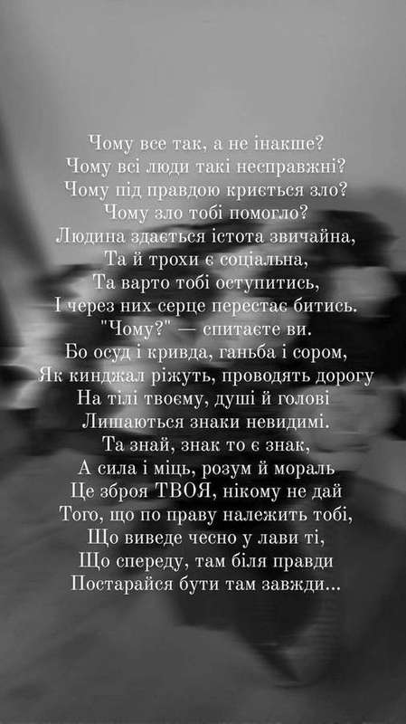
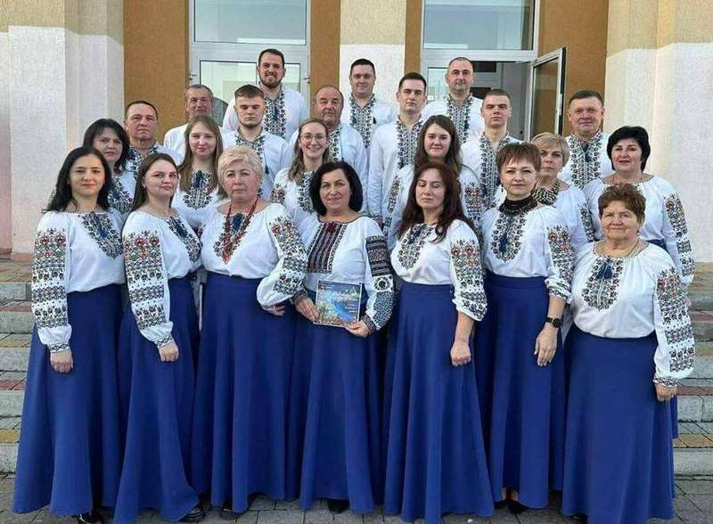
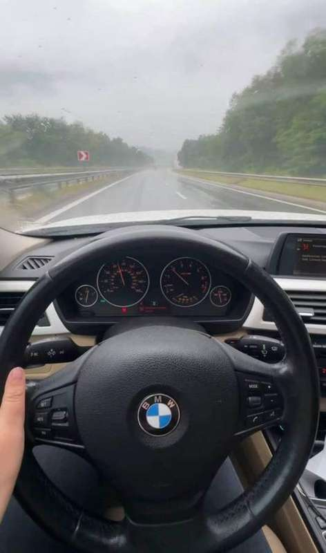
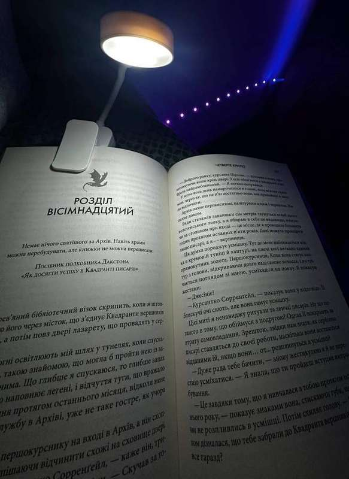
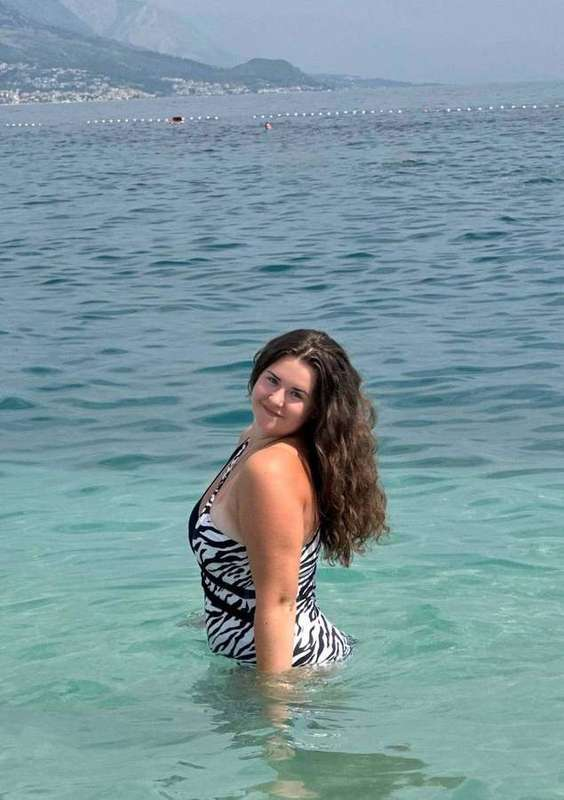
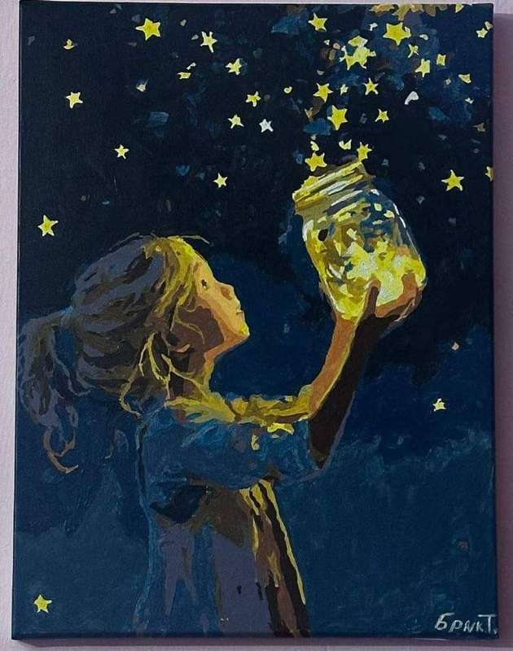
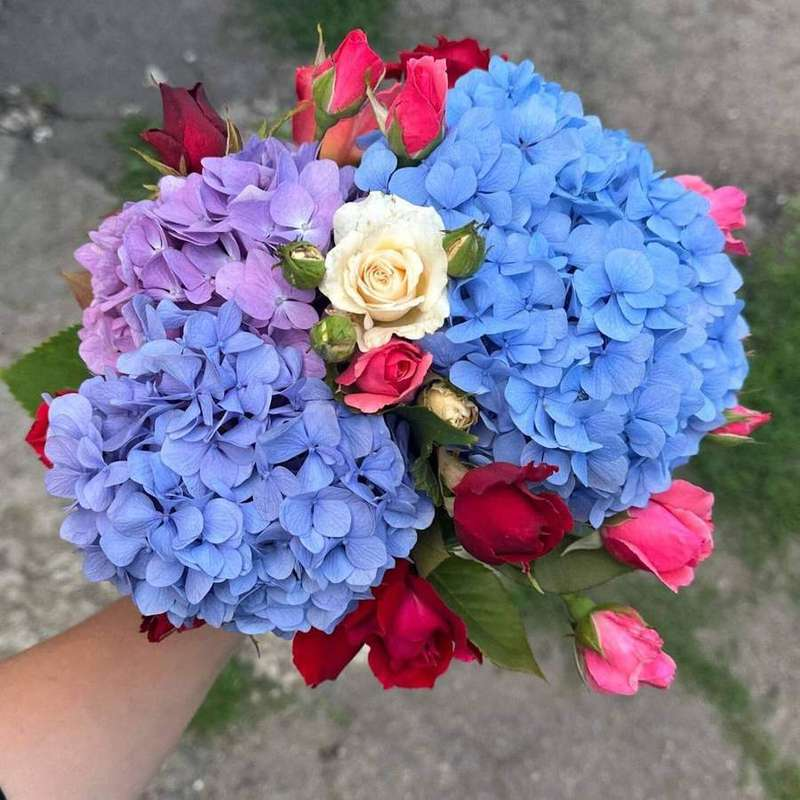
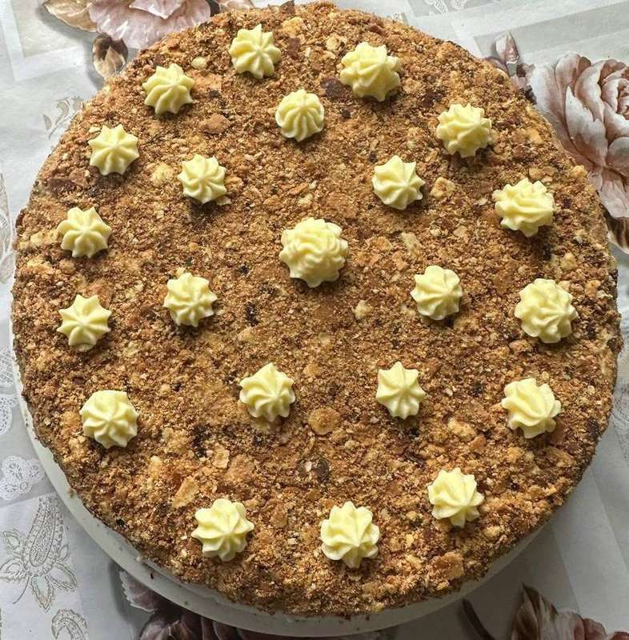
Подобається поєднання фентезі, романтики та напруженого сюжету.
Ця книга ще більше розкриває світ серії та стосунки головних героїв.
Сподобалася атмосфера академії, дракони та динамічний сюжет.
Продовження було емоційним і ще більше розширило світ історії.
Мені сподобалася емоційність історії та розкриття персонажів та їх внутрішніх переживань.
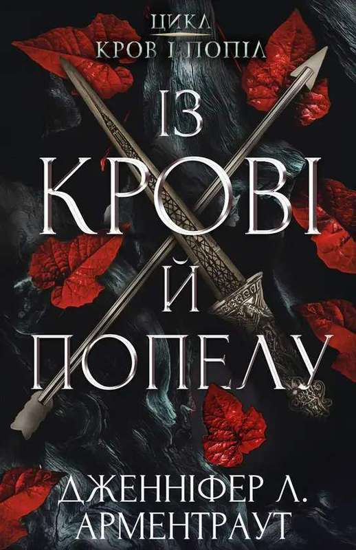
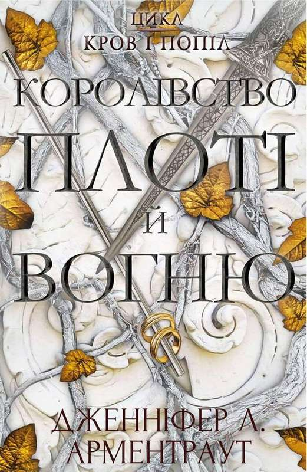
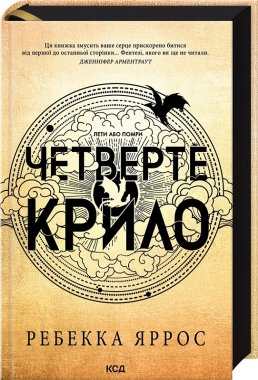
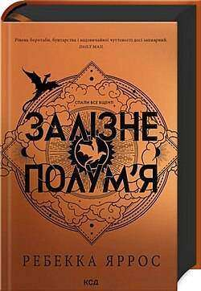
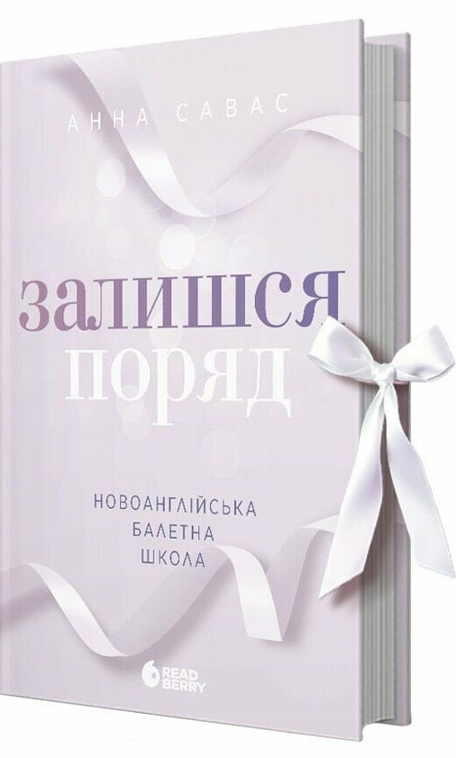
| Назва | Автор | Жанр | Моя оцінка |
|---|---|---|---|
| Із крові і попелу | Дженніфер Л. Арментроут | Фентезі, романтика | 10/10 |
| Королівство плоті й вогню | Дженніфер Л. Арментроут | Фентезі, романтика | 9/10 |
| Четверте крило | Ребекка Яррос | Фентезі | 10/10 |
| Залізне полум’я | Ребекка Яррос | Фентезі | 9/10 |
| Залишся поряд | Анна Савас | Романтика | 8/10 |
Найчастіше слухаю сучасну попмузику, особливо треки з атмосферним звучанням і мелодійним вокалом.
Люблю відкривати нових українських виконавців та додавати улюблені композиції до своїх плейлистів.
Обираю музику залежно від настрою: спокійні композиції для відпочинку та енергійні треки для прогулянок і тренувань.
Мене зачаровує як кілька інструментів можуть створити фантастичне звучання, а симфонічні оркестри це взагалі любов.
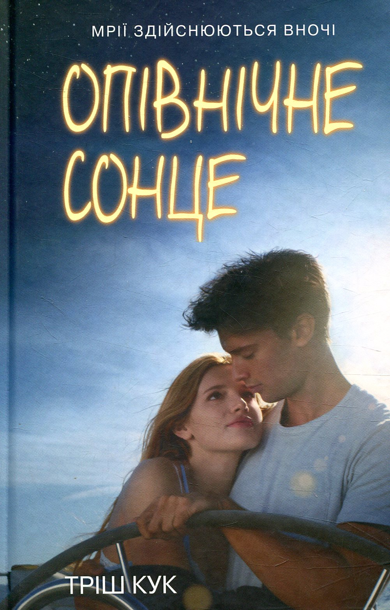
2018
Подобається атмосфера фільму, емоційність персонажів, те, як показали цю історію кохання, і якими сильними були герої.
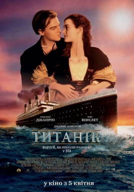
1997
Давня класика, фільм, який можна передивлятись часто, історія, яка полонила багато сердець.
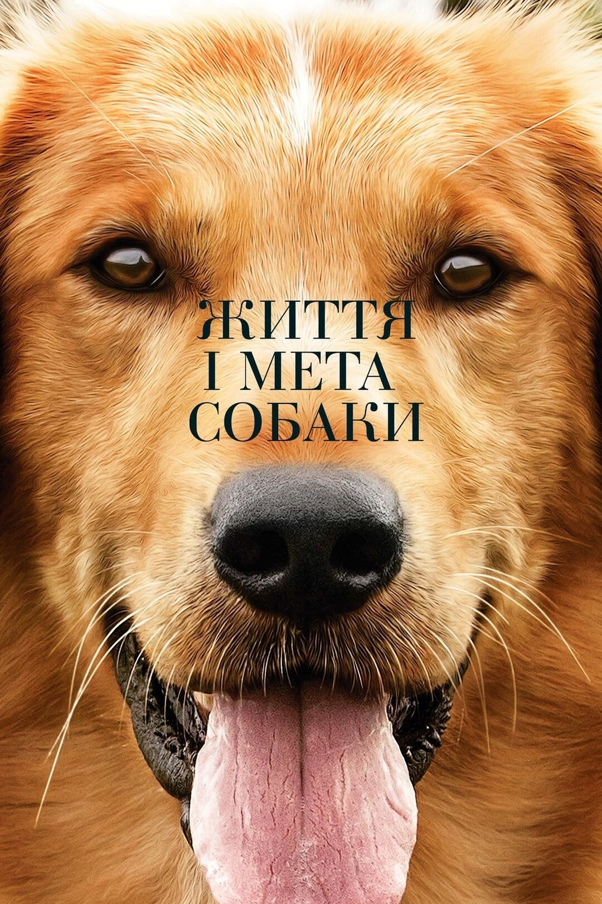
2017
Фільми про тварин — це вічна любов. Емоції, які я отримую при перегляді, не пояснити. Зв'язок людини і собаки неймовірний.
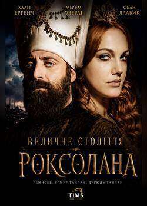
2011
Серіал дитинства. Цікаво спостерігати за розвитком персонажів, їхньою силою і владою, гаремними інтригами, жартами та неймовірними костюмами.
Стараюся регулярно тренуватися у залі, щоб підтримувати хороше самопочуття, витривалість і баланс між навчанням та активністю.
Люблю довгі прогулянки містом і на природі, особливо коли хочеться відпочити від навчання та перезавантажитися.
Подобається активний відпочинок у горах, красиві маршрути та відчуття після підйому на вершину.
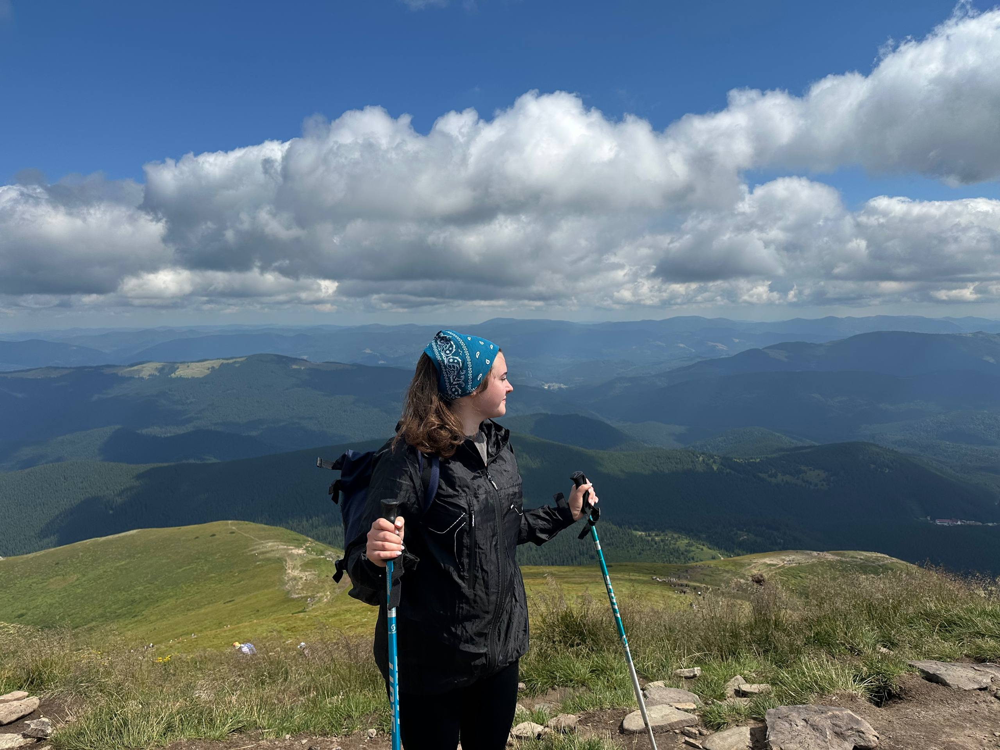
Подорожі допомагають мені відпочити, побачити нові місця та зібрати яскраві спогади.
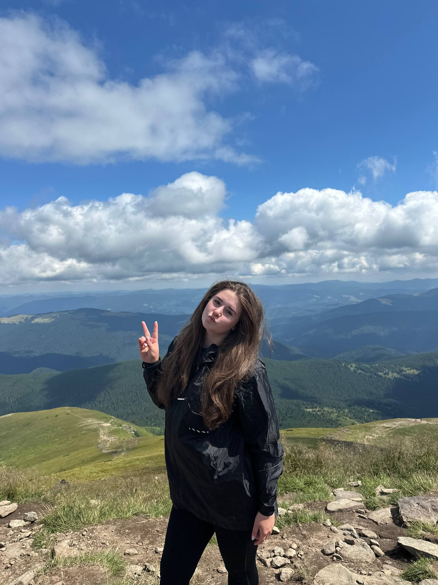
Говерла — одна з найвідоміших вершин Українських Карпат.
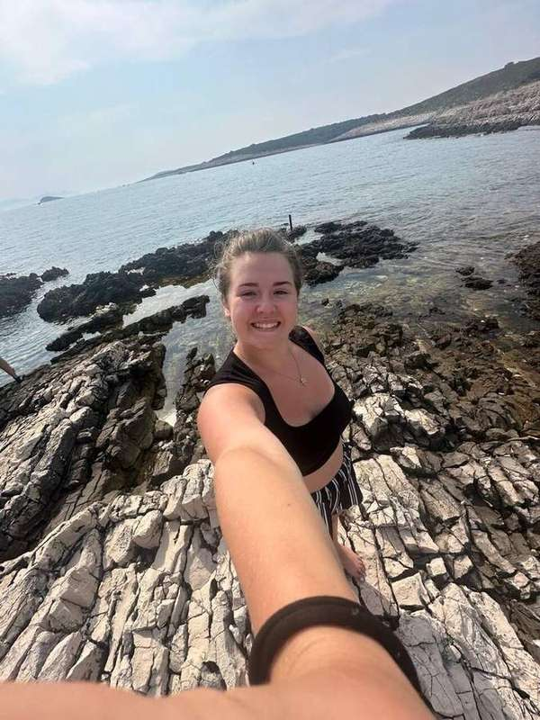
Спліт — місто з цікавою архітектурою, красивими місцями та чудовими пляжами. Особливо сподобалося чисте й тепле море.
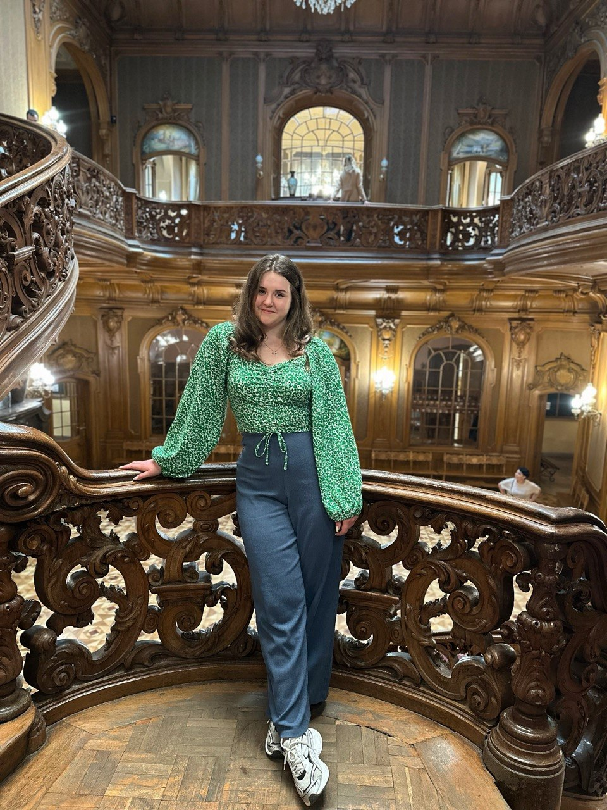
Львів — місто, де люблю гуляти, відкривати нові заклади та знаходити атмосферні місця.
Бакс — мій лабрадор і справжній член сім’ї. Він дуже добрий, активний і завжди створює хороший настрій. Любить прогулянки, увагу та бути поруч із рідними.
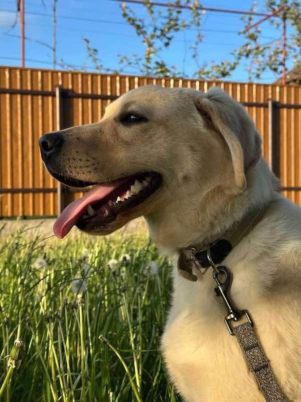
Працювала над дизайном сайту для навчального командного вебпроєкту. Використовувала Figma та працювала з Git.
Створювала макети, працювала з фреймами, сітками, компонентами та візуальним оформленням інтерфейсів.
Самостійно отримала посвідчення водія та вже пів року спокійно їжджу за кермом.
Здійснила свою давню мрію і піднялась на Говерлу, отримала багато емоцій та енергії.
Люблю бути активною та пробувати себе у різних сферах, тому намагаюся поєднувати університет, роботу та власний розвиток.
Найбільше у проєктах мене захоплює візуальна частина: кольори, композиція, оформлення та створення зручних інтерфейсів.
Підйом на Говерлу був однією з моїх цілей. Люблю гори за красиві краєвиди, атмосферу та відчуття після підйому.
Можу довго гуляти містом, відкривати нові місця та просто відпочивати від навчання і справ.
Найбільше люблю фентезі та романтичні історії з атмосферним світом, сильними героями та захопливим сюжетом.
Хочу краще опанувати Figma, розвивати навички UI/UX-дизайну та створювати власні макети й проєкти.
Мені подобається відкривати нові міста й країни, відпочивати біля моря та збирати нові враження з кожної поїздки.
І все на світі треба пережити,І кожен фініш – це, по суті, старт,І наперед не треба ворожити,І за минулим плакати не варт
Ліна Костенко
Не бійся починати з малого. Великі результати складаються з маленьких кроків, які ти робиш щодня.
Мотиваційна цитата
Розвиток починається там, де з’являється бажання спробувати те, чого ти ще не вмієш.
Мотиваційна цитата
Якщо хочете зв'язатися зі мною, можете написати через форму нижче.